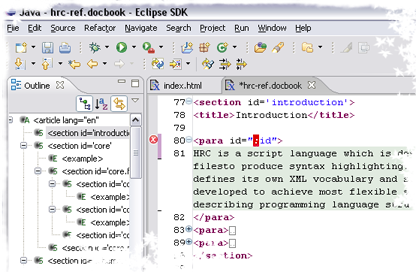

The easiest way to install colorer is via Eclipse Update Manager.
Create new location
http://colorer.sf.net/eclipsecolorer/
using update manager,
and Eclipse will allow you to automatically install EclipseColorer.
Later you can use this way to simply and efficiently update colorer and
check for its new versions.
To install Colorer for Eclipse manually you should download EclipseColorer-take5.x.x.x.zip package. 
This package contains EclipseColorer plugin, packed Colorer's HRC database and native library component. If you want to rebuild native part of the plugin, you have to get SVN trunks for colorer and eclipsecolorer modules.
Unpack content of plugin's package into %ECLIPSEHOME%/plugins/
folder and restart Eclipse.
If you already have development Colorer-take5 Library installed in your system
(f.e. from full library package version), you can delete colorer
directory and specify path to your catalog.xml file with one of the
standard locations.
This way is useful for HRC development and for common usage of HRC catalog.
EclipseColorer editor inherits from standard Eclipse Text Editor and implements syntax highlighting, thus allowing to use all default feature of Eclipse Editor. You can reuse all default shortcuts, all actions, settings and so on. Note, that colorer knows nothing about Java Editor or CDT Editor, so you can't use their extended capabilities line autocompletion, navigation, templating simultaneously with EclipseColorer.
Entry Colorer Library of Windows/Preferences dialog
contains several options, managing EclipseColorer's editor look and feel.
These includes:
To use paired constructions matching, you can open a context menu, when the caret is placed on a paired region. There you can choose commands to find and position caret on the other pair, or to select all the text content between paired structures. These commands could be runned from toolbar buttons also.
If you want to customize icons used to display items in structure
tree (outline), place them in
eclipse\plugins\net.sf.colorer_x.x.x\icons\outline\<schemename>
and name as your regions (use existing files for example).
If you want to customize icon for your file type, copy <editor> entry under
<extension point="org.eclipse.ui.editors"> entry and replace
id, name, icon, extensions attributes with your values.
{kind=link}
{kind=link}